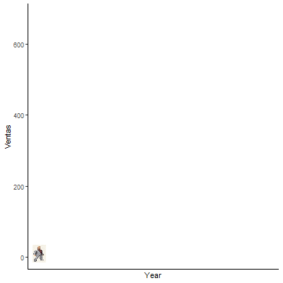
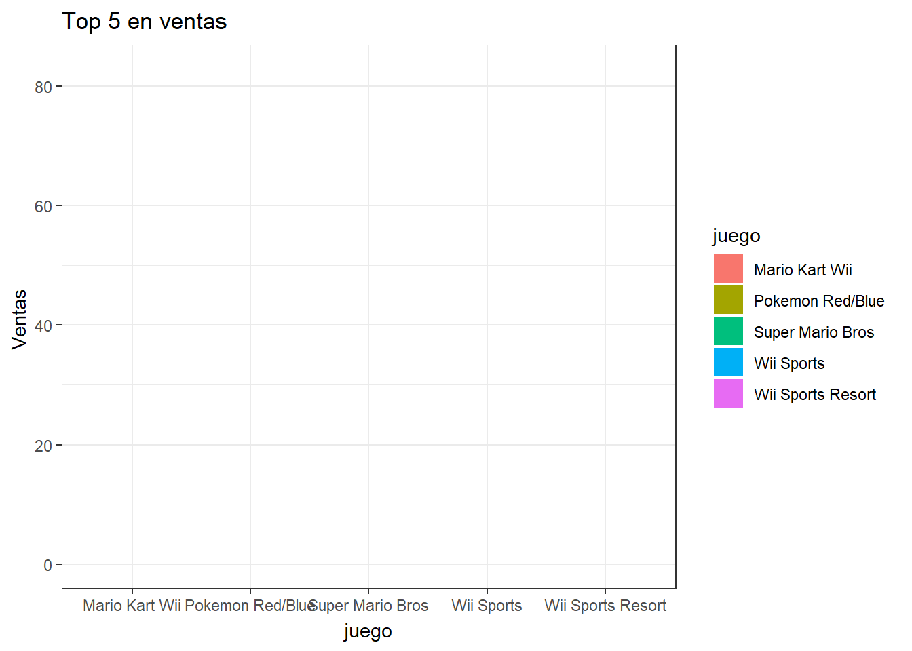
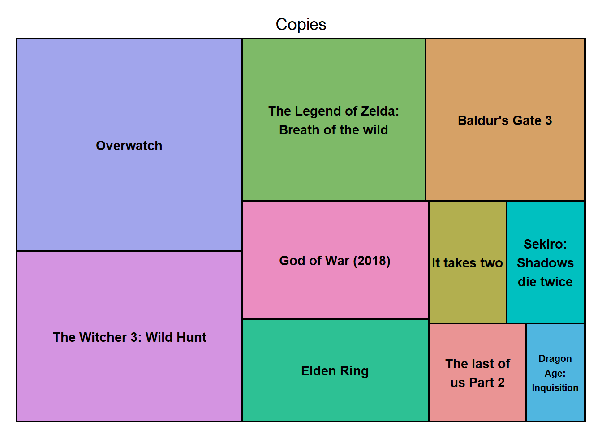

Sabemos que los videojuegos mueven grandes cantidades de dinero, de hecho, desde hace unos años, superaron al cine en este aspecto, convirtiéndose en el modo de entretenimiento más grande en lo que a ingresos se refiere. Por eso, y por el hecho de que me parece interesante hablar de ellos, os traigo un análisis al respecto.
Vamos a echar un vistazo al mercado de los videojuegos, basándonos en ventas de distintos juegos, clasificándolos mediante regiones, plataformas, géneros… y a realizar algunas observaciones sobre los juegos del año.
Los datos utilizados para la realización de este trabajo han sido extraídos de la página Kaggle. Originalmente los iba a extraer de statista, pero para descargarlos satisfactoriamente requería una cuenta de pago, por lo que hay que tirar de lo gratuito, aunque la información de aquí tampoco se queda corta. Han sido cargados de formato csv de aquí: kaggle.
Adicionalmente, he utilizado datos de un excel de elaboración propia a partir de datos oficiales de los Game Awards, como se puede ver en esta página: thegamer.
Me he ayudado de la galería de gráficos de ggplot para hacer parte de este trabajo: Rgraphgallery.
Código
# A continuación se muestran todos los paquetes utilizados para la realización del trabajolibrary(tidyverse)library(tidyr)library(dplyr)library(ggplot2)library(gganimate)library(ggimage)library(readxl)library(sf) library(ggthemes)library(plotly)library(viridis) library(treemap) library(treemapify)library(RColorBrewer) library(stringr) library(ggrepel)library(purrr) library(flexdashboard) library(vembedr) library(packcircles)library(ggiraph)library(wordcloud2) library(imager) library(meme)library(DT)# Ahora cargamos los datos necesarios y los transformamos a dataframes, ventas <-read.csv("datos/vgsales.csv") %>%as.data.frame()ganadores <-read_excel("datos/Gotywinners.xlsx", col_types =c("numeric", "text", "numeric"))# Esta parte del código la usé para que me dejase eliminar los valores NA que no podía suprimir de otro modo ventas[ventas =="N/A"] <-NAventas <- ventas %>%na.omit()# Pasamos los años a formato numéricoventas$Year <-as.numeric(as.character(ventas$Year))
3. Análisis
Ventas mundiales
Lo primero de todo es ver el nivel de ventas del a lo largo del tiempo. Cabe destacar que si bien estos datos no son los más precisos, sí resaltan algunos momentos clave de la industria. Podemos marcar el inicio a finales de los años 70, o en este caso, 1980, con la popularización de la Atari 2600. Por aquel entonces, las consolas solo se veían como juguetes caros, y el consumo de videojuegos no estaba ni de cerca tan extendido como ahora, de ahí que el inicio esté marcado por números pequeños. Podemos observar cómo en 1983 hay un crash, y es que fue cuando se lanzó al mercado del videojuego de “ET el extraterrestre”, el cual, dado el éxito de la película, tuvo un desarrollo muy apresurado, fruto de la confianza en que vendeería bien solo por basarse en la película, por lo que acabó pésimamente programado (no como este trabajo, espero). La pésima recepción del mismo en la consola, que entonces era la dominante, llevó a la crisis del videojuego del 83.
Una de las anécdotas más conocidas de esta crisis es la del entierro de las copias excedentes de los almacenes en el desierto de Nuevo México. Esto sumado a la escasa reputación del medio llevaron a una situación crítica en la industria, pero en 1985, Nintendo dio con la panacea, el Super Mario Bros. Si bien en 1985 las ventas totales no son tan altas como llegarían a serlo en el futuro, es importante destacar que el grueso de estas fueron únicamente del Super Mario Bros, que estalló en popularidad y, muy probablemente, salvó a la industria de su desaparición.
A partir de ahí habría años mejores y peores, pero en general, el mercado crecía cada año más y más. El pico mostrado en estos datos en 2008 se debe, probablemente, al lanzamiento de consolas como la Nintendo DS, la Nintendo Wii unos pocos años antes, y de la PS2 en el 2000. Esto se debe a los números en ventas que veremos más adelante.
Tras esto, los números decaen, sin embargo esto se debe a una posible falta de datos en la base, pues el mercado ha seguido creciendo desde entonces.
Mediante este gráfico podemos ver lo antes expuesto de manera más clara pero más corriente
Código
# A partir de aquí todo es retocar el dataframe y crear el gráficoventas_tiempo <- ventas %>%select(Year, Global_Sales) %>%group_by(Year) %>%summarise(Ventas_anuales =sum(Global_Sales, na.rm =TRUE)) g1 <-ggplot(data = ventas_tiempo, aes(x=Year, y=Ventas_anuales)) +geom_line(color ="green") +geom_point(color ="orange") +labs(x ="Año", y ="Ventas globales", title ="Evolución de las ventas totales a nivel mundial") ggplotly(g1)
Solo es una versión animada del gráfico anterior, pero a la cabeza de este hay una imagen que saqué de internet del protagonista principal de la saga Yakuza, lo cual multiplica su valor por mucho.
Código
# Establecemos la imagenimage_Kiryu <-"./imagenes/kiryu.jpg"# Creamos el gráfico y le aplicamos la animacióng1 <-ggplot(data = ventas_tiempo, aes(x=Year, y=Ventas_anuales)) +geom_line(color ="green") +geom_image(aes(y = Ventas_anuales, image = image_Kiryu)) +scale_x_continuous(breaks =seq(), limits =c(1980, 2020)) +theme_classic() +labs(y ="Ventas") +transition_reveal(Year) animate(g1, width =400, height =400, fps =25, duration =10, rewind =FALSE)

Comparación entre regiones
Ahora vamos a dividir las ventas entre las tres regiones principales: Norteamérica, Europa y . Agruparemos el resto de ventas en una cuarta categoría: otros. Todas las regiones tienen una evolución similar, por lo que son representativas de las ventas a nivel global. Lo más notable es que el mercado más grande ha sido el norteamericano, seguido por el europeo. El mercado japonés es, lógicamente, más pequeño, aunque en ciertos puntos llegó a superar al americano a mediados de los 90. Por último, el resto de regiones confomran la parte minoritaria de las ventas, aunque es curioso que llegasen a superar al mercado japonés en algunos puntos de la primera década de los 2000.
Vamos a centrarnos ahora en los 5 primeros puestos de la lista en lo que a ventas se refiere. Tal y como muestra este gráfico de barras poco práctico pero bastante chulo, el primer puesto indiscutible se lo lleva Wii Sports, aunque aquí hay algo de trampa, pues en cada Wii se incluía una copia del juego, por lo que si te comprabas una Wii, te comprabas el Wii Sports. En segundo lugar, el Super Mario Bros, y no es para menos, no solo fue un bombazo cuando salió en la Famicom y en la NES, sino que desde entonces ha adquirido un estatus de clásico eterno, entre otras cosas, por salvar a la industria y por ser Super Mario uno de los personajes ficticios más conocidos de la historia. Los otros 3 puestos no tienen historias tan interesantes, pero ahí están.
Código
# Se crea el dataframetop_5 <- ventas %>%rename(juego = Name, copias = Global_Sales) %>%select(juego, copias) %>%slice_max(copias, n =5)# Para hacer un gráfico de barras animado, primero establecemos un estado inicial para el primer frame de la animación, voy a dejar los valores de ventas a 0 para que quede más vistosa la evolución:a <-data.frame(juego=c("Wii Sports","Super Mario Bros","Mario Kart Wii", "Wii Sports Resort", "Pokemon Red/Blue"), values=c(0, 0, 0, 0, 0), frame=rep('a',5))b <-data.frame(juego=c("Wii Sports","Super Mario Bros","Mario Kart Wii", "Wii Sports Resort", "Pokemon Red/Blue"), values=c(82.74, 40.24, 35.82, 33.00, 31.37), frame=rep('b',5))data <-rbind(a,b) # Ahora establecemos las características de la animaciónggplot(data, aes(x=juego, y=values, fill=juego)) +labs(y ="Ventas ", title ="Top 5 en ventas") +geom_bar(stat='identity') +theme_bw() +transition_states( frame,transition_length =2,state_length =2 ) +ease_aes('sine-in-out')# Por último, lo guardamos como gif:anim_save("./gifs/288-animated-barplot-transition.gif")

Ventas por plataforma
A continuación, veremos las ventas clasificadas por plataformas. Lo primero que se ve es que no parece haber término medio, pues hay muchísimas ventas de juegos en las consolas que más éxito han tenido, mientras que en el resto hay muchísimas menos.
Código
# Se crea el dataframeventas_plataformas <- ventas %>%select(Year, Platform, Global_Sales) %>%group_by(Platform) %>%summarise(ventas_p =sum(Global_Sales, na.rm =TRUE)) # Se hace el gráficog_p <- ventas_plataformas %>%ggplot(aes(x = Platform, y = ventas_p)) +geom_segment( aes(x= Platform, xend=Platform, y=ventas_p, yend=0), color="skyblue") +labs(x ="Plataforma", y ="Ventas", title ="Ventas por plataforma") +geom_point( color="blue", size=4, alpha=0.6) +theme_light() +coord_flip() +theme(panel.grid.major.y =element_blank(),panel.border =element_blank(),axis.ticks.y =element_blank())ggplotly(g_p)
Clasificación por género
Y ahora, por género. No sorprende demasiado ver que los géneros más populares son Acción, Deportes y Shooters, seguidos muy de cerca por juegos de Rol y de Plataformas.
# Dataframeventas_genero <- ventas %>%select(Year, Genre, Global_Sales) %>%group_by(Genre) %>%summarise(ventas_g =sum(Global_Sales, na.rm =TRUE)) # Con esto se ve en formaro nube de palabraswordcloud2(data=ventas_genero, size=0.5)
Código
g_g <- ventas_genero %>%ggplot(aes(x=Genre, y=ventas_g, fill=Genre)) +labs(x ="Ventas", y ="Género", title ="Ventas por género") +geom_bar(stat ="identity") +coord_flip()ggplotly(g_g)
Juego del Año
Pasamos a los ganadores del premio “Juego del Año (GOTY)
Vamos a repasar qué juego ganó la categoría de Game of the Year cada año desde 2014 hasta 2023. Ya había juegos del año antes de 2014, pero fue ese año cuando se fundaron los Game Awards, y para el caso, vamos a tomar solo estos en consideración.
Código
# Se seleccionan juegos y el año de cada unogotys_year <- ganadores %>%select(Year, Game)# Se presenta en tabladatatable(gotys_year)
Para acabar, vamos a ver qué peso ha tenido cada juego del año en términos de ventas. Los dos más grandes en este aspecto han sido The Witcher 3 y Overwatch, que en su día estaban hasta en la sopa.
Código
gotys <- ganadores %>%select(Game, Copies)# Determinamos los datos del treemapGame <-c("Dragon Age: Inquisition", "The Witcher 3: Wild Hunt", "Overwatch", "The Legend of Zelda: Breath of the wild", "God of War (2018)", "Sekiro: Shadows die twice", "The last of us Part 2", "It takes two", "Elden Ring", "Baldur's Gate 3")Copies <-c(6000000, 40000000, 50000000, 31150000, 23000000, 10000000, 10000000, 10000000, 20000000, 27000000)data <-data.frame(Game,Copies)# Se crea el treemapt_goty <-treemap(data,index="Game",vSize="Copies",type="index" )t_goty#> $tm#> Game vSize vColor stdErr vColorValue#> 1 Baldur's Gate 3 27000000 1 27000000 NA#> 2 Dragon Age: Inquisition 6000000 1 6000000 NA#> 3 Elden Ring 20000000 1 20000000 NA#> 4 God of War (2018) 23000000 1 23000000 NA#> 5 It takes two 10000000 1 10000000 NA#> 6 Overwatch 50000000 1 50000000 NA#> 7 Sekiro: Shadows die twice 10000000 1 10000000 NA#> 8 The last of us Part 2 10000000 1 10000000 NA#> 9 The Legend of Zelda: Breath of the wild 31150000 1 31150000 NA#> 10 The Witcher 3: Wild Hunt 40000000 1 40000000 NA#> level x0 y0 w h color#> 1 1 0.7196522 0.5760117 0.2803478 0.4239883 #D6A166#> 2 1 0.8968214 0.0000000 0.1031786 0.2560052 #50B6E0#> 3 1 0.3962140 0.0000000 0.3286430 0.2679124 #2DC194#> 4 1 0.3962140 0.2679124 0.3286430 0.3080993 #EB8DC1#> 5 1 0.7248570 0.2560052 0.1375715 0.3200065 #B2AF4F#> 6 1 0.0000000 0.4444444 0.3962140 0.5555556 #A1A5EC#> 7 1 0.8624285 0.2560052 0.1375715 0.3200065 #00C0C0#> 8 1 0.7248570 0.0000000 0.1719644 0.2560052 #EA9494#> 9 1 0.3962140 0.5760117 0.3234383 0.4239883 #7EBA68#> 10 1 0.0000000 0.0000000 0.3962140 0.4444444 #D494E1#> #> $type#> [1] "index"#> #> $vSize#> [1] "Copies"#> #> $vColor#> [1] NA#> #> $stdErr#> [1] "Copies"#> #> $algorithm#> [1] "pivotSize"#> #> $vpCoorX#> [1] 0.02812148 0.97187852#> #> $vpCoorY#> [1] 0.01968504 0.91031496#> #> $aspRatio#> [1] 1.483512#> #> $range#> [1] NA#> #> $mapping#> [1] NA NA NA#> #> $draw#> [1] TRUE

Tanto el GOTY de 2019 como el de 2022 son juegos de From Software, respectivamente. Tengo especial preferencia por los juegos de esta compañía, y aprovecho que han sido juegos del año y figuran aquí para recomendar los dos. Son juegos reconcidos por su elevada dificultad, pero también por la gratidicación que supone completarlos. Dejo por aquí una reseña que vi de Elden Ring hace poco y que creo que puede ser entretenida e informativa.
4. Conclusión
Con todo lo observado, podemos concluir que hubo un fuerte crecimiento del mercado desde que las consolas eran consideradas meros juguetes electrónicos, y que si a día de hoy hay ciertas empresas muy reconocidas, como es el caso de Nintendo, no es para menos, siendo esta la que salvó a la industria del colapso total. Con el tiempo han ido surgiendo nuevas consolas, pero que desde hace unos años, toda la variedad de las décadas previas a los 2000 se ha reducido a tres marcas predilectas (sin contar el PC), en las cuales se ha seguido la tradición cultivada en los géneros que aparecieron hace tiempo, pero que han seguido cambiando con los avances técnicos.
5. Observaciones
La verdad es que no estoy del todo disgustado con el resultado. Es un trabajo mucho más sencillo, pero creo que queda vistoso. Me hubiera gustado poder añadir algunas cosas más, pero ha habido complicaciones, como el que no me funcionase el gráfico de las ventas por regiones si añadía las banderas respectivas al gráfico, o que en el apartado de juegos del año, la primera pestaña mostraba una tabla pero de repente deja de funcionar aún sin haber tocado nada tras la última comprobación (y encima sí se renderiza por separado). Hay veces que es muy complicado reparar los errores que van surgiendo, pero en general, ha sido una buena experiencia a pesar de las dificultades.
Código
meme <-load.image("./imagenes/meme.jpg")meme(meme,upper="Yo en corto",size=2.5,vjust=0.27)
6. Bibliografía
Los datos sobre ventas han sido extraídos de kaggle.
Los datos de juegos del año son de elaboración propia a partir de datos de thegamer.
Información sobre la sesión
Abajo muestro mi entorno de trabajo y paquetes utilizados
---title: "Análisis del mercado de videojuegos"description: | Sabemos que los videojuegos mueven grandes cantidades de dinero, de hecho, desde hace unos años, superaron al cine en este aspecto, convirtiéndose en el modo de entretenimiento más grande en lo que a ingresos se refiere. Por eso, y por el hecho de que me parece interesante hablar de ellos, os traigo un análisis al respecto.author: - name: David Bayot affiliation: Universitat de València affiliation-url: https://www.uv.esdate: 2024-01-24 categories: [trabajo BigData, videojuegos] image: "./imagenes/imagen_01.png"title-block-banner: true title-block-banner-color: "green" toc-depth: 3smooth-scroll: trueformat: html: #backgroundcolor: "#F1F3F4" #embed-resources: true link-external-newwindow: true #css: ./assets/my_css_file.css #- CUIDADO!!!!code-tools: truecode-link: true---# 1. IntroducciónVamos a echar un vistazo al mercado de los videojuegos, basándonos en ventas de distintos juegos, clasificándolos mediante regiones, plataformas, géneros... y a realizar algunas observaciones sobre los juegos del año.# 2. Datos::: {.panel-tabset}## Sobre los datosLos datos utilizados para la realización de este trabajo han sido extraídos de la página Kaggle. Originalmente los iba a extraer de statista, pero para descargarlos satisfactoriamente requería una cuenta de pago, por lo que hay que tirar de lo gratuito, aunque la información de aquí tampoco se queda corta. Han sido cargados de formato csv de aquí:[kaggle](https://www.kaggle.com/datasets/gregorut/videogamesales/code){target="_blank"}.Adicionalmente, he utilizado datos de un excel de elaboración propia a partir de datos oficiales de los Game Awards, como se puede ver en esta página: [thegamer](https://www.thegamer.com/every-game-of-the-year-goty-game-and-where-to-buy-them/){target="_blank"}.Me he ayudado de la galería de gráficos de ggplot para hacer parte de este trabajo: [Rgraphgallery](https://r-graph-gallery.com/){target="_blank"}.## Código de los datos```{r}#| code-fold: true#| warning: false# A continuación se muestran todos los paquetes utilizados para la realización del trabajolibrary(tidyverse)library(tidyr)library(dplyr)library(ggplot2)library(gganimate)library(ggimage)library(readxl)library(sf) library(ggthemes)library(plotly)library(viridis) library(treemap) library(treemapify)library(RColorBrewer) library(stringr) library(ggrepel)library(purrr) library(flexdashboard) library(vembedr) library(packcircles)library(ggiraph)library(wordcloud2) library(imager) library(meme)library(DT)# Ahora cargamos los datos necesarios y los transformamos a dataframes, ventas <-read.csv("datos/vgsales.csv") %>%as.data.frame()ganadores <-read_excel("datos/Gotywinners.xlsx", col_types =c("numeric", "text", "numeric"))# Esta parte del código la usé para que me dejase eliminar los valores NA que no podía suprimir de otro modo ventas[ventas =="N/A"] <-NAventas <- ventas %>%na.omit()# Pasamos los años a formato numéricoventas$Year <-as.numeric(as.character(ventas$Year))```:::# 3. Análisis---## Ventas mundialesLo primero de todo es ver el nivel de ventas del a lo largo del tiempo. Cabe destacar que si bien estos datos no son los más precisos, sí resaltan algunos momentos clave de la industria. Podemos marcar el inicio a finales de los años 70, o en este caso, 1980, con la popularización de la Atari 2600. Por aquel entonces, las consolas solo se veían como juguetes caros, y el consumo de videojuegos no estaba ni de cerca tan extendido como ahora, de ahí que el inicio esté marcado por números pequeños. Podemos observar cómo en 1983 hay un crash, y es que fue cuando se lanzó al mercado del videojuego de "ET el extraterrestre", el cual, dado el éxito de la película, tuvo un desarrollo muy apresurado, fruto de la confianza en que vendeería bien solo por basarse en la película, por lo que acabó pésimamente programado (no como este trabajo, espero). La pésima recepción del mismo en la consola, que entonces era la dominante, llevó a la crisis del videojuego del 83.Una de las anécdotas más conocidas de esta crisis es la del entierro de las copias excedentes de los almacenes en el desierto de Nuevo México. Esto sumado a la escasa reputación del medio llevaron a una situación crítica en la industria, pero en 1985, Nintendo dio con la panacea, el Super Mario Bros. Si bien en 1985 las ventas totales no son tan altas como llegarían a serlo en el futuro, es importante destacar que el grueso de estas fueron únicamente del Super Mario Bros, que estalló en popularidad y, muy probablemente, salvó a la industria de su desaparición.A partir de ahí habría años mejores y peores, pero en general, el mercado crecía cada año más y más. El pico mostrado en estos datos en 2008 se debe, probablemente, al lanzamiento de consolas como la Nintendo DS, la Nintendo Wii unos pocos años antes, y de la PS2 en el 2000. Esto se debe a los números en ventas que veremos más adelante.Tras esto, los números decaen, sin embargo esto se debe a una posible falta de datos en la base, pues el mercado ha seguido creciendo desde entonces.::: {.panel-tabset}## Gráfico estáticoMediante este gráfico podemos ver lo antes expuesto de manera más clara pero más corriente```{r}#| code-fold: true#| warning: false# A partir de aquí todo es retocar el dataframe y crear el gráficoventas_tiempo <- ventas %>%select(Year, Global_Sales) %>%group_by(Year) %>%summarise(Ventas_anuales =sum(Global_Sales, na.rm =TRUE)) g1 <-ggplot(data = ventas_tiempo, aes(x=Year, y=Ventas_anuales)) +geom_line(color ="green") +geom_point(color ="orange") +labs(x ="Año", y ="Ventas globales", title ="Evolución de las ventas totales a nivel mundial") ggplotly(g1)```## Gráfico artísticoSolo es una versión animada del gráfico anterior, pero a la cabeza de este hay una imagen que saqué de internet del protagonista principal de la saga Yakuza, lo cual multiplica su valor por mucho.```{r}#| code-fold: true#| warning: false# Establecemos la imagenimage_Kiryu <-"./imagenes/kiryu.jpg"# Creamos el gráfico y le aplicamos la animacióng1 <-ggplot(data = ventas_tiempo, aes(x=Year, y=Ventas_anuales)) +geom_line(color ="green") +geom_image(aes(y = Ventas_anuales, image = image_Kiryu)) +scale_x_continuous(breaks =seq(), limits =c(1980, 2020)) +theme_classic() +labs(y ="Ventas") +transition_reveal(Year) animate(g1, width =400, height =400, fps =25, duration =10, rewind =FALSE)```:::---## Comparación entre regionesAhora vamos a dividir las ventas entre las tres regiones principales: Norteamérica, Europa y . Agruparemos el resto de ventas en una cuarta categoría: otros. Todas las regiones tienen una evolución similar, por lo que son representativas de las ventas a nivel global. Lo más notable es que el mercado más grande ha sido el norteamericano, seguido por el europeo. El mercado japonés es, lógicamente, más pequeño, aunque en ciertos puntos llegó a superar al americano a mediados de los 90. Por último, el resto de regiones confomran la parte minoritaria de las ventas, aunque es curioso que llegasen a superar al mercado japonés en algunos puntos de la primera década de los 2000.```{r}#| code-fold: true#| warning: false# Primero se crean los dataframes para las distintas regionesventas_eu <- ventas %>%select(Year, EU_Sales) %>%group_by(Year) %>%summarise(eu_Sales =sum(EU_Sales, na.rm =TRUE)) ventas_na <- ventas %>%select(Year, NA_Sales) %>%group_by(Year) %>%summarise(na_Sales =sum(NA_Sales, na.rm =TRUE)) ventas_jp <- ventas %>%select(Year, JP_Sales) %>%group_by(Year) %>%summarise(jp_Sales =sum(JP_Sales, na.rm =TRUE)) ventas_otras <- ventas %>%select(Year, Other_Sales) %>%group_by(Year) %>%summarise(other_Sales =sum(Other_Sales, na.rm =TRUE)) # Ahora se crea y anima el gráficog2 <-ggplot(data = ventas_eu, aes(x=Year, y=eu_Sales,)) +geom_line(color ="blue") +geom_line(data = ventas_na, aes(x=Year, y=na_Sales), color ="red") +geom_line(data = ventas_jp, aes(x=Year, y=jp_Sales), color ="green") +geom_line(data = ventas_otras, aes(x=Year, y=other_Sales), color ="purple") +scale_x_continuous(breaks =seq(), limits =c(1980, 2020)) +theme_classic() +labs(y ="Ventas") +transition_reveal(Year) animate(g2, width =400, height =400, fps =25, duration =10, rewind =FALSE)```---## Top 5 juegosVamos a centrarnos ahora en los 5 primeros puestos de la lista en lo que a ventas se refiere. Tal y como muestra este gráfico de barras poco práctico pero bastante chulo, el primer puesto indiscutible se lo lleva Wii Sports, aunque aquí hay algo de trampa, pues en cada Wii se incluía una copia del juego, por lo que si te comprabas una Wii, te comprabas el Wii Sports. En segundo lugar, el Super Mario Bros, y no es para menos, no solo fue un bombazo cuando salió en la Famicom y en la NES, sino que desde entonces ha adquirido un estatus de clásico eterno, entre otras cosas, por salvar a la industria y por ser Super Mario uno de los personajes ficticios más conocidos de la historia. Los otros 3 puestos no tienen historias tan interesantes, pero ahí están.```{r}#| code-fold: true#| warning: false# Se crea el dataframetop_5 <- ventas %>%rename(juego = Name, copias = Global_Sales) %>%select(juego, copias) %>%slice_max(copias, n =5)# Para hacer un gráfico de barras animado, primero establecemos un estado inicial para el primer frame de la animación, voy a dejar los valores de ventas a 0 para que quede más vistosa la evolución:a <-data.frame(juego=c("Wii Sports","Super Mario Bros","Mario Kart Wii", "Wii Sports Resort", "Pokemon Red/Blue"), values=c(0, 0, 0, 0, 0), frame=rep('a',5))b <-data.frame(juego=c("Wii Sports","Super Mario Bros","Mario Kart Wii", "Wii Sports Resort", "Pokemon Red/Blue"), values=c(82.74, 40.24, 35.82, 33.00, 31.37), frame=rep('b',5))data <-rbind(a,b) # Ahora establecemos las características de la animaciónggplot(data, aes(x=juego, y=values, fill=juego)) +labs(y ="Ventas ", title ="Top 5 en ventas") +geom_bar(stat='identity') +theme_bw() +transition_states( frame,transition_length =2,state_length =2 ) +ease_aes('sine-in-out')# Por último, lo guardamos como gif:anim_save("./gifs/288-animated-barplot-transition.gif")```---## Ventas por plataformaA continuación, veremos las ventas clasificadas por plataformas. Lo primero que se ve es que no parece haber término medio, pues hay muchísimas ventas de juegos en las consolas que más éxito han tenido, mientras que en el resto hay muchísimas menos.```{r}#| code-fold: true#| warning: false# Se crea el dataframeventas_plataformas <- ventas %>%select(Year, Platform, Global_Sales) %>%group_by(Platform) %>%summarise(ventas_p =sum(Global_Sales, na.rm =TRUE)) # Se hace el gráficog_p <- ventas_plataformas %>%ggplot(aes(x = Platform, y = ventas_p)) +geom_segment( aes(x= Platform, xend=Platform, y=ventas_p, yend=0), color="skyblue") +labs(x ="Plataforma", y ="Ventas", title ="Ventas por plataforma") +geom_point( color="blue", size=4, alpha=0.6) +theme_light() +coord_flip() +theme(panel.grid.major.y =element_blank(),panel.border =element_blank(),axis.ticks.y =element_blank())ggplotly(g_p)```---## Clasificación por géneroY ahora, por género. No sorprende demasiado ver que los géneros más populares son Acción, Deportes y Shooters, seguidos muy de cerca por juegos de Rol y de Plataformas.::: {.panel-tabset}## Nube de palabras```{r}#| code-fold: true#| warning: false# Dataframeventas_genero <- ventas %>%select(Year, Genre, Global_Sales) %>%group_by(Genre) %>%summarise(ventas_g =sum(Global_Sales, na.rm =TRUE)) # Con esto se ve en formaro nube de palabraswordcloud2(data=ventas_genero, size=0.5)```## Gráfico de barras```{r}#| code-fold: true#| warning: falseg_g <- ventas_genero %>%ggplot(aes(x=Genre, y=ventas_g, fill=Genre)) +labs(x ="Ventas", y ="Género", title ="Ventas por género") +geom_bar(stat ="identity") +coord_flip()ggplotly(g_g)```:::---## Juego del AñoPasamos a los ganadores del premio "Juego del Año (GOTY)::: {.panel-tabset}## GOTY de cada añoVamos a repasar qué juego ganó la categoría de Game of the Year cada año desde 2014 hasta 2023. Ya había juegos del año antes de 2014, pero fue ese año cuando se fundaron los Game Awards, y para el caso, vamos a tomar solo estos en consideración.```{r}#| code-fold: true#| warning: false# Se seleccionan juegos y el año de cada unogotys_year <- ganadores %>%select(Year, Game)# Se presenta en tabladatatable(gotys_year)```## Juegos del añoPara acabar, vamos a ver qué peso ha tenido cada juego del año en términos de ventas. Los dos más grandes en este aspecto han sido The Witcher 3 y Overwatch, que en su día estaban hasta en la sopa.```{r}#| code-fold: true#| warning: falsegotys <- ganadores %>%select(Game, Copies)# Determinamos los datos del treemapGame <-c("Dragon Age: Inquisition", "The Witcher 3: Wild Hunt", "Overwatch", "The Legend of Zelda: Breath of the wild", "God of War (2018)", "Sekiro: Shadows die twice", "The last of us Part 2", "It takes two", "Elden Ring", "Baldur's Gate 3")Copies <-c(6000000, 40000000, 50000000, 31150000, 23000000, 10000000, 10000000, 10000000, 20000000, 27000000)data <-data.frame(Game,Copies)# Se crea el treemapt_goty <-treemap(data,index="Game",vSize="Copies",type="index" )t_goty```## RecomendaciónTanto el GOTY de 2019 como el de 2022 son juegos de From Software, respectivamente. Tengo especial preferencia por los juegos de esta compañía, y aprovecho que han sido juegos del año y figuran aquí para recomendar los dos. Son juegos reconcidos por su elevada dificultad, pero también por la gratidicación que supone completarlos. Dejo por aquí una reseña que vi de Elden Ring hace poco y que creo que puede ser entretenida e informativa.```{r}#| echo = FALSE,#| out.width = "100%"embed_url("https://www.youtube.com/watch?v=ki4wO784_s8")```:::---# 4. ConclusiónCon todo lo observado, podemos concluir que hubo un fuerte crecimiento del mercado desde que las consolas eran consideradas meros juguetes electrónicos, y que si a día de hoy hay ciertas empresas muy reconocidas, como es el caso de Nintendo, no es para menos, siendo esta la que salvó a la industria del colapso total. Con el tiempo han ido surgiendo nuevas consolas, pero que desde hace unos años, toda la variedad de las décadas previas a los 2000 se ha reducido a tres marcas predilectas (sin contar el PC), en las cuales se ha seguido la tradición cultivada en los géneros que aparecieron hace tiempo, pero que han seguido cambiando con los avances técnicos.# 5. ObservacionesLa verdad es que no estoy del todo disgustado con el resultado. Es un trabajo mucho más sencillo, pero creo que queda vistoso. Me hubiera gustado poder añadir algunas cosas más, pero ha habido complicaciones, como el que no me funcionase el gráfico de las ventas por regiones si añadía las banderas respectivas al gráfico, o que en el apartado de juegos del año, la primera pestaña mostraba una tabla pero de repente deja de funcionar aún sin haber tocado nada tras la última comprobación (y encima sí se renderiza por separado). Hay veces que es muy complicado reparar los errores que van surgiendo, pero en general, ha sido una buena experiencia a pesar de las dificultades.```{r}#| code-fold: true#| warning: falsememe <-load.image("./imagenes/meme.jpg")meme(meme,upper="Yo en corto",size=2.5,vjust=0.27)```---# 6. BibliografíaLos datos sobre ventas han sido extraídos de [kaggle](https://www.kaggle.com/datasets/gregorut/videogamesales/code){target="_blank"}.Los datos de juegos del año son de elaboración propia a partir de datos de [thegamer](https://www.thegamer.com/every-game-of-the-year-goty-game-and-where-to-buy-them/){target="_blank"}.### Información sobre la sesiónAbajo muestro mi entorno de trabajo y paquetes utilizados```{r}#| echo: falsesessioninfo::session_info() %>% details::details(summary ='current session info') ```